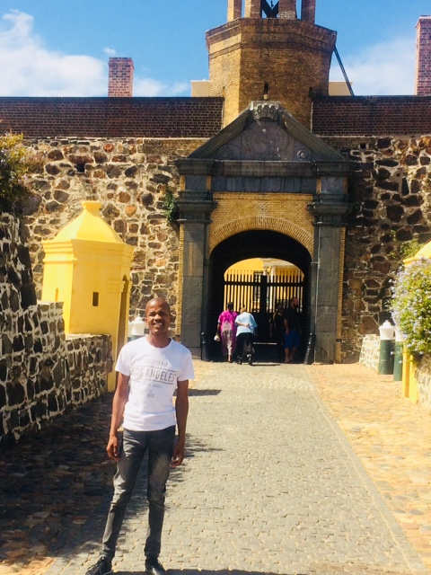

The main feature of Table Mountain is the level plateau approximately 3 kilometres (2 mi) from side to side, edged by impressive cliffs. The plateau, flanked by Devil's Peak to the east and by Lion's Head to the west, forms a dramatic backdrop to Cape Town. This broad sweep of mountainous heights, together with Signal Hill, forms the natural amphitheatre of the City Bowl and Table Bay harbour.
| English | Arabic |
|---|---|
| Hello, How are you? | مرحبا كيف حالك? |
| Do you love programming? | هل تحب البرمجة? |
| I love coding | أحب الترميز |
V&A Waterfront With over 250 shops ranging from craft stalls to international designer boutiques, the Victoria & Alfred Waterfront offers the best shopping in Cape Town, all under one roof! With a hugely varied selection of restaurants, visitors to the Waterfront are spoilt for choice: from fast food to fine dining there is something to satisfy everyone. The V&A Waterfront, in the heart of Cape Town’s working harbour, is South Africa’s most visited destination for both tourists and locals alike, and a great departure point for the best days tours in Cape Town.
The Castle of Good Hope is a bastion fort built in the 17th century in Cape Town, South Africa. Originally located on the coastline of Table Bay, following land reclamation the fort is now located inland.
The Port of Cape Town is the port of the city of Cape Tow n, South Africa. It is situated in Table Bay. Because of its position along one of the world's busiest trade routes it is one of the busiest ports in South Africa, handling the largest amount of fresh fruit and second only to Durban as a container port. The port also has significant repair and maintenance facilities that are used by several large fishing fleets and parts of the West African oil industry. Because of the many tourist attractions offered by Cape Town and its surrounding region, many cruise ships also berth in the port.
The Video is giving a Visual Understanding of the Historical Places in Cape Town